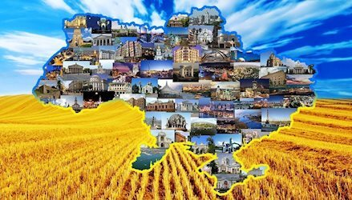

Україна: Країна з Багатошаровитою Історією та Культурою
Україна, східноєвропейська країна з багатою історією та різноманітною культурою, відома своєю величезною спадщиною, мальовничими пейзажами та гостинними людьми. За міжнародними стандартами, Україна є найбільшою країною в Європі за площею після Росії, та має неперевершену культурну спадщину, яка охоплює тисячоліття історії.
Історія
Історія України налічує тисячоліття, починаючи з давніх слов'янських племен, які поселилися на її території. Україна була свідком великих історичних подій, таких як Київська Русь, що стала центром слов'янської цивілізації в середньовіччі, та Литовсько-Польська держава. Найбільш відомий період історії України, можливо, це ХХ століття, коли країна стала ареною для революцій, війн та політичних змін, що включали в себе українську національну революцію, світові війни, радянську окупацію та незалежність в 1991 році.
Культура
Культура України багата та різноманітна. Вона охоплює унікальну архітектуру, народне мистецтво, музику, літературу та кухню. Українська мова, яка є офіційною, має статус державної мови та є важливою складовою національної ідентичності.
Національні свята та обряди, такі як Масляна, Великдень, День Незалежності, а також традиційні вишиванки, кутя та борщ, додавали колориту українському культурному календарю від століть.
Природа
Природа України різноманітна та захоплююча. З північного краю Карпатських гір до східного узбережжя Чорного та Азовського морів, країна пропонує мальовничі гірські ландшафти, безкраї степи, річки та озера.
Карпати приваблюють туристів своїми гірськими вершинами, лісами та туристичними містечками, тоді як Кримський півострів славиться своїми пляжами та курортами.
Україна: Серце Східної Європи
Україна, надзвичайно країна з багатою історією та неповторною культурою, завжди привертала увагу своїми мальовничими пейзажами та гостинними людьми. За міжнародними стандартами, Україна є найбільшою країною в Європі за площею після Росії, але її справжнє багатство полягає в душі її народу та його невичерпній силі.
Прапор України: Символ Незламності
Високий патріотизм українців відображений у їхньому національному символі - жовто-синьому прапорі, який став відображенням бажання волі та незалежності. Жовтий колір символізує поле, а синій - небо над ним. Це також може бути сприйнято як відображення злиття та єднання українського народу.
Герб України: Сила та Традиція
Герб України, що складається з тризуба на тлі геометричних фігур, відображає стародавні традиції та сучасність країни. Тризуб символізує силу, а сучасний дизайн герба відображає розвиток та прогрес України в сучасному світі.
Культурна Спадщина: Джерело Патріотизму
Культура України - це справжнє багатство, яке складається з унікальної музики, танців, народного мистецтва та літератури. Відомі українські композитори, письменники та художники внесли значний внесок у світову культуру, а українські народні свята та обряди продовжують жити в серцях кожного українця, підтримуючи їх патріотичний дух.
Природні Краси: Відкриття Унікальних Ландшафтів
Україна славиться своєю природою - від Карпатських гір до Чорного та Азовського морів. Мальовничі ліси, степи, гори та водойми вражають своєю красою та різноманіттям. Вони є не лише джерелом краси, але і важливим символом національного багатства та патріотизму.